Publications
Publications since 2023, organized chronologically.
2026
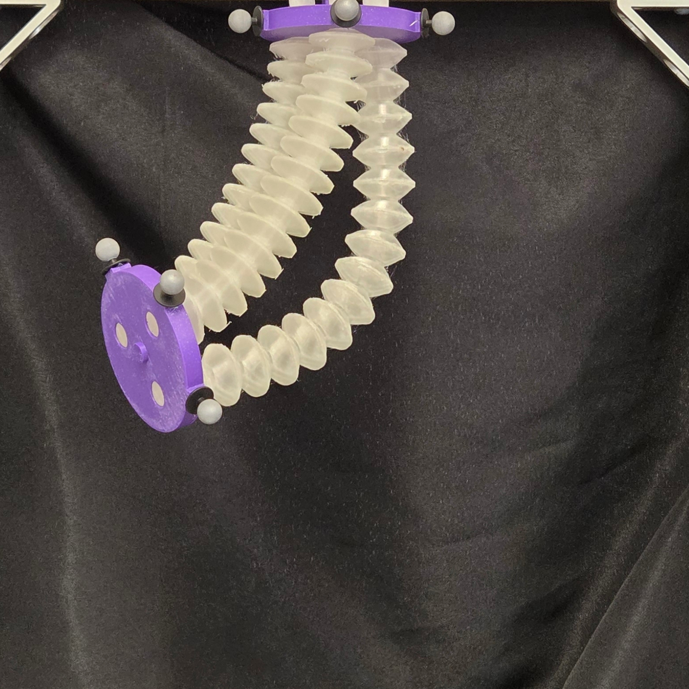
Nithin S. Kumar, Eric J. Barth
Currently under review, 2026
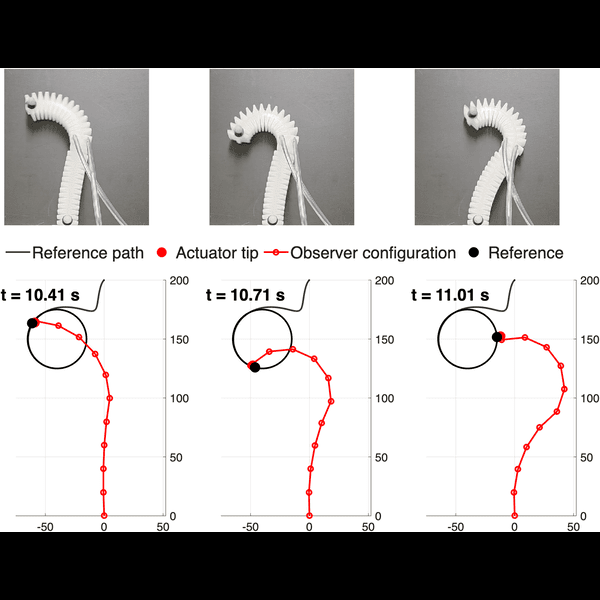
Nithin S. Kumar, Joshua Gaston, D. Caleb Rucker, Eric J. Barth
Currently under review, 2026
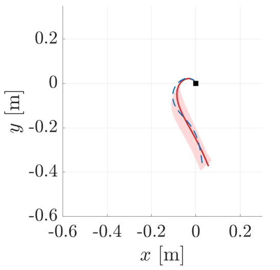
Mohammad Ali, Nithin S. Kumar, Eric J. Barth, Thomas Beckers
Submitted to IEEE Conference on Decision and Control (CDC), 2026
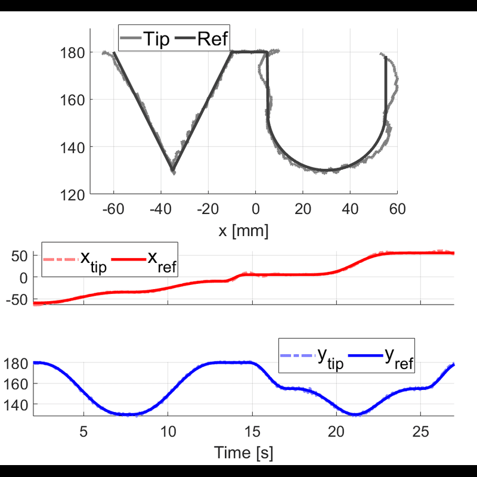
Nithin S. Kumar, John E. Peters, Thomas Beckers, Eric J. Barth
Accepted at ASME Letters in Dynamic Systems and Control, 2026
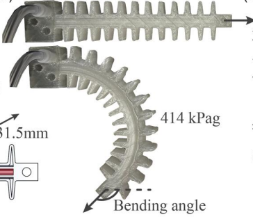
Sung Y. Kim, Nithin S. Kumar, Eric J. Barth
Journal of Dynamic Systems, Measurement, and Control, 148(3), 031003, 2026
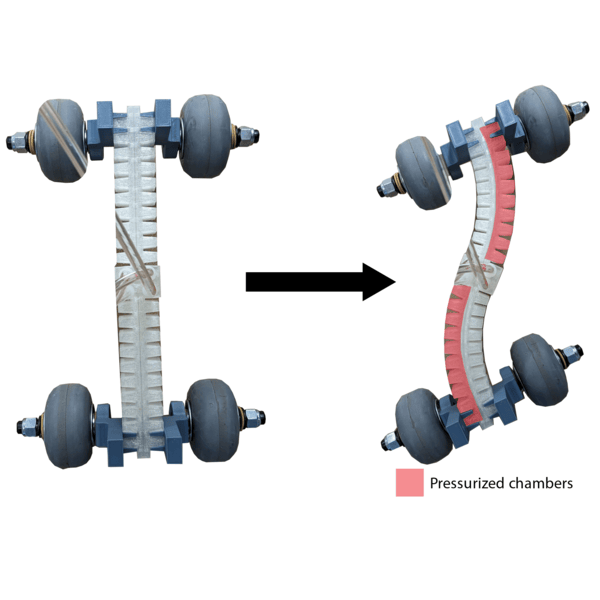
Nithin S. Kumar, John E. Peters, Sung Y. Kim, Joshua Gaston, D. Caleb Rucker, Eric J. Barth
Journal of Mechanisms and Robotics, 18(4), 041002, 2026
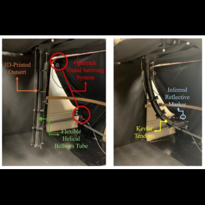
Joshua B. Gaston, Nithin S. Kumar, Eric J. Barth, D. Caleb Rucker
Journal of Mechanisms and Robotics, 18(3), 031002, 2026
2025

J. Gallentine, Nithin S. Kumar, Eric J. Barth
International Design Engineering Technical Conferences and Computers and Information in Engineering Conference, 2025
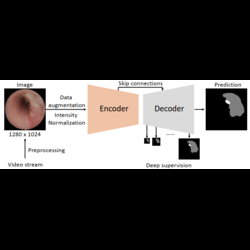
H. Li, J. Wang, Nithin S. Kumar, J. d'Almeida, D. Lu, A. Acar, J. Han, Q. Yang, [remaining authors]
Medical Imaging 2025: Image-Guided Procedures, Robotic Interventions, and Modeling, 2025
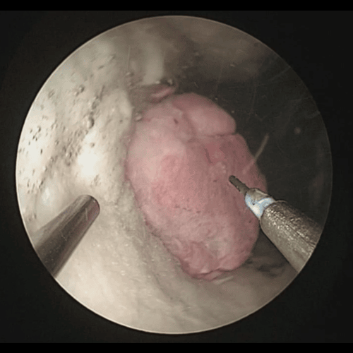
Nithin S. Kumar, Jason A. Shrand, Susheela Sharma, S. Duke Herrell III, Nicholas L. Kavoussi, Ahmed Ghazi, Eric J. Barth, Ipek Oguz, Alan Kuntz, Robert J. Webster III
Hamlyn Symposium on Medical Robotics (HSMR), 2025
2024

J. Gallentine, Nithin S. Kumar, Eric J. Barth
Fluid Power Systems Technology, 88193, V001T01A024, 2024
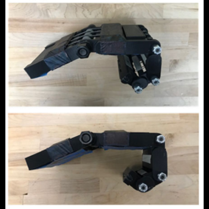
Elissa D. Ledoux, Nithin S. Kumar, Eric J. Barth
Wearable Technologies, 5, e19, 2024
2023
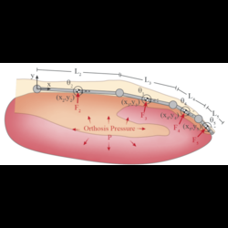
Elissa Ledoux, Nithin S. Kumar, Eric J. Barth
TechRxiv Preprint, 2023

John E. Peters, Abby M. Grillo, Daniel S. Esser, Sarah J. Garrow, Nithin S. Kumar, Tyler Ball, Robert Naftel, Dario J. Englot, Joseph Neimat, William A. Grissom, Robert J. Webster III, Eric J. Barth
Fluid Power Systems Technology, 87431, V001T01A007, 2023